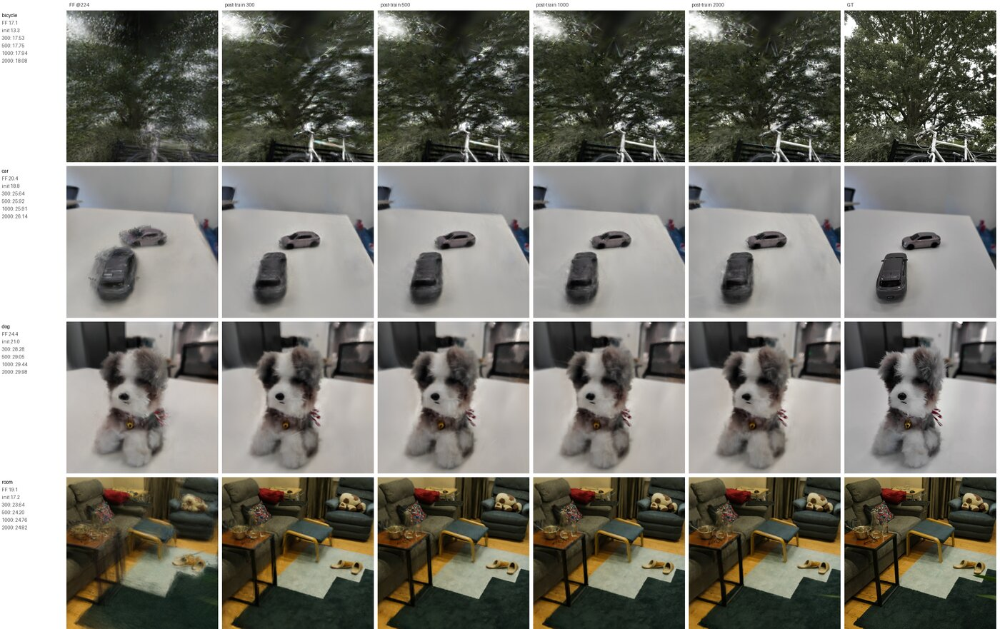

FF_HW
面向 π³ (Pi3) 类前馈 3D 重建大模型的专用推理加速器。从量化方案确定、脉动阵列架构，到 RTL 实现与 FPGA 上板验证，全部由本人独立完成。 A dedicated inference accelerator for π³ (Pi3)-class feed-forward 3D reconstruction models. Everything from the quantization scheme and systolic-array architecture through RTL implementation and FPGA validation was carried out independently by me.
我的边界Scope of my contribution
- 独立完成Solely mine
- 全部内容：量化管线、架构定档、RTL、综合与上板验证。该项目仓库没有第二位作者。 All of it: the quantization pipeline, architectural sizing, RTL, synthesis and board-level validation. The repository has no second author.
- PPA 数字的性质What the PPA numbers are
- unit 级的面积与频率来自 DC 实测报告；32×32 全引擎已可经 SRAM 宏黑盒流程一键生成 ASIC 网表，但更大档位的面积与功耗仍为外推结果，并非签核数据。二者不应混同。 Unit-level area and frequency come from actual DC reports, and the 32×32 full engine already generates an ASIC netlist in one pass through an SRAM macro black-box flow. Figures for larger configurations remain extrapolations rather than signed-off results. The two must not be conflated.
- 上板验证的范围What has actually run on hardware
- 整网 75 个 Transformer 块已全部在 V80 上运行；逐字节一致的结论覆盖帧内块、分块作业与全长输出三类作业集，计数见下文。ASIC 侧止于综合与网表生成，未流片。 All 75 transformer blocks of the network now run on V80. The byte-exact result covers three job sets, intra-frame blocks, tile jobs and full-length outputs, with counts given below. On the ASIC side the work stops at synthesis and netlist generation; it has not been taped out.
- Attention 核的来源Where the attention core came from
- 移植自本人此前的 FlashAttention 竞赛 RTL。新增部分是 256 lane 重新并行化、π³ 行分数的位精确对齐、INT8 输出驻留与归一化单元。 Ported from my own earlier FlashAttention competition RTL. What is new here: re-parallelization to 256 lanes, bit-exact alignment against real π³ row scores, INT8 output stationarity and the normalizer unit.
量化方案确定Fixing the quantization contract
自行搭建了一套训练后量化 (PTQ) 管线，在 π³-Large 上评估精度。此处的一个关键选择是采用双指标闭环，即同时考察点图重建质量与相机位姿精度。仅依据重建指标会遗漏问题：位姿通路对量化最为敏感，重建指标正常而位姿精度已明显劣化的情形确有发生。 I built a post-training quantization (PTQ) pipeline and evaluated accuracy on π³-Large. One choice was decisive here: closing the loop on two metrics, point-map reconstruction quality and camera pose accuracy. Reconstruction alone conceals problems, since the pose path is the most quantization-sensitive part of these models and can degrade appreciably while reconstruction still appears intact.
在 7-Scenes 子集上的评估结果表明，W8A8 与 W6A6 两档在双指标上均无损失；W4A8 在纯 PTQ 条件下位姿精度出现小幅退化，重建指标基本持平。位姿通路在 W8A8 / W6A6 下同样无损这一结论具有独立的参考价值 实测评估evaluated。 Evaluated on a 7-Scenes subset, W8A8 and W6A6 are lossless on both metrics, while pure-PTQ W4A8 incurs a small loss of pose accuracy with reconstruction holding approximately flat. That the pose path survives W8A8 and W6A6 intact is a result of independent interest evaluated.
最终落到硬件的方案为激活 FP8 E4M3、权重 INT8，softmax / LayerNorm / GELU 全部整数实现。激活选用 FP8 是因其动态范围问题最为突出；非线性单元一律走整数，目的是使 Python 定点参考模型与 RTL 保持逐位一致——只要保留一个浮点算子，这条对拍链即告中断。 The scheme that reached hardware uses FP8 E4M3 activations, INT8 weights, and all-integer softmax, LayerNorm and GELU. Activations take FP8 because dynamic range is their dominant difficulty; the non-linear units are integer throughout so that the Python fixed-point reference model and the RTL remain bit-identical. Retaining a single floating-point operator would break that comparison chain.
整数通路的精度损失由后训练吸收Post-training absorbs the quantization loss
在 YoNoSplat 前馈 3DGS 全流程上做了 11 个场景的端到端评测。整数前馈直出相对 FP32 存在可观差距，但该管线本就要接后训练：约 300 轮后差距已收敛至十分之一量级，2000 轮后进一步缩小，其中 5 个场景反超 FP32。这一结论决定了量化档位可以定得比直觉更激进——若仅依据前馈直出的差距判断，会误判为必须保留浮点 软件评估evaluated。 An end-to-end evaluation over 11 scenes was run on the full YoNoSplat feed-forward 3DGS pipeline. Raw integer feed-forward output sits appreciably below FP32, but this pipeline runs post-training regardless: after roughly 300 rounds the gap has closed by an order of magnitude, it narrows further by 2,000 rounds, and 5 of the scenes overtake FP32. This is what permits a more aggressive quantization setting than intuition suggests; judging from the raw feed-forward gap alone would wrongly imply that floating point has to stay evaluated.

阵列架构与定档Array architecture and sizing
阵列规模由分析模型确定，而非经验估计。模型表明该网络全程 GEMM-bound 而非访存受限：在相同输入下，GEMM 耗时较访存高出一个数量级。既然瓶颈在算力，面积预算即应向阵列倾斜。据此确定了 R×C 可参数化的描述符驱动层级流水引擎：多个阵列档位共用同一份 RTL，换档仅调整参数而不分叉代码，因而每一档均可独立上板或独立综合，无需维护多套实现。 The array size was determined analytically rather than by estimation. A model first established that this network is GEMM-bound throughout rather than memory-bound: on the same inputs, GEMM time exceeds memory traffic time by an order of magnitude. Since compute is the bottleneck, the area budget belongs in the array. This fixed a parameterizable R×C, descriptor-driven hierarchical pipeline: the array configurations share a single RTL source, so changing configuration adjusts parameters rather than forking the code, and each configuration can be brought up or synthesized independently without maintaining several implementations.
配套设计了同宽度的 LayerNorm 与 GELU 向量单元。softmax 的吞吐目标由阵列的消费速率反推确定，其约束条件是 softmax 不得成为新的瓶颈。 Alongside it are LayerNorm and GELU vector units of matching width. The softmax throughput target was derived backwards from the consumption rate of the array under a single constraint: softmax must not become the new bottleneck.
28nm 综合实证：目标频率够得着28nm synthesis: the target frequency is reachable
为确认高频目标可实际达成而非仅为标称值，在 28nm 上对若干关键单元执行了 unit 级综合，包括 GEMM 阵列、AttnRowCore 与 RopeUnit，约束采用悲观 corner（Synopsys DC，SS 0.81 V / 125 °C）。三个单元均在目标周期下收敛，其中 GEMM 阵列为 slack = 0，即恰好满足约束。该路径不存在时序余量，构成了后续全部规模选型的硬约束 DC。能效锚点取自 report_power，同一口径 report_power。
To establish that the high-frequency target was attainable rather than merely nominal, I ran unit-level synthesis of the key blocks in 28nm: the GEMM array, AttnRowCore and RopeUnit, constrained at a pessimistic corner (Synopsys DC, SS 0.81 V / 125 °C). All three close at the target period, with the GEMM array at slack = 0, exactly meeting the constraint. That path carries no timing margin and constitutes the hard constraint behind every downstream sizing decision DC. The efficiency anchor comes from report_power on the same basis report_power.
频率-面积折衷The frequency–area tradeoff
在同一阵列上将时序约束收紧一倍，面积仅增加 1.42×，即以 1.42× 的面积换取 2× 的频率。该曲线使得是否提高工作频率由主观取舍转变为可量化的决策。 Tightening the timing constraint by 2× on the same array increases area by only 1.42×: 1.42× the area buys 2× the frequency. With this curve established, whether to push for higher frequency ceases to be a matter of preference and becomes a quantifiable decision.
大宏采用双 bank 交错：两个 bank 各运行于一半频率，通过错相访问获得全速的等效吞吐。当单个宏无法满足目标频率时，采用两个低速宏错相访问的代价低于更换高速宏。 The large macros use dual-bank interleaving: two banks each running at half the frequency, accessed out of phase to yield full-rate effective throughput. Where a single macro cannot meet the target frequency, two lower-speed macros accessed out of phase cost less than substituting a faster one.
Attention 核Attention core
将本人此前竞赛作品中的 FlashAttention RTL 移植至此，并按 256 lane 重新并行化。在线 softmax 的 m/l 递推、exp 查表与 α 重标度等机制均予保留。累加位宽沿用原设计中可证明下界的结论（d = 64 对应 37 bit）；该结论可直接复用，是因为 π³ 的 d_head 同为 64。 I ported the FlashAttention RTL from my earlier competition entry and re-parallelized it to 256 lanes. The m/l recurrence of online softmax, the exp lookup and α rescaling all carry over. The accumulator width reuses the provable lower bound established in the original design, 37 bits for d = 64; that result transfers directly because π³ also uses d_head = 64.
行核端到端 bit-exact，相对浮点 attention 误差 0.091%。 The row core is bit-exact end to end, with 0.091% error against float attention.
此处真正决定耗时的是访存安排而非算力。令 K/V 跨查询块驻留，即同一份 K/V 服务完全部查询块后再行替换，单块周期数降至原先的 约六分之一；该优化未改动任何乘法器，节省的全部来自重复搬运。 What governs runtime here is the memory schedule rather than arithmetic. Making K/V resident across query blocks, so that one copy of K/V serves every query block before being replaced, reduced the per-block cycle count to roughly one sixth. No multiplier changed; the saving is entirely eliminated re-fetching.
另一项是 K/V 分窗流式两遍计算：引擎的 token 容量固定，但经分窗两遍后，长度远超该容量的全局注意力仍可单遍走完且无需重算分数，代价为逻辑资源增加 0.2%。以 0.2% 的逻辑规避「放大引擎或重算分数」这一二选一，是本版中性价比最高的一处改动。 The second is windowed two-pass streaming over K/V: the engine has a fixed token capacity, yet with windowing across two passes, global attention far longer than that capacity still completes in a single sweep with no score recomputation, at a cost of 0.2% additional logic. Spending 0.2% of logic to avoid the choice between enlarging the engine and recomputing scores is the best-value change in this revision.
DSP 资源优化：以 LUT 换 DSPTrading LUTs for DSPs
在 V80 上 DSP 构成硬约束：直接实现 32×32 分块时 DSP58 占用超过 100%，设计无法布下。 On V80, DSP is the hard constraint: a direct 32×32 tile pushes DSP58 utilization past 100%, leaving the design unimplementable.
解决方法是 operand-split 打包：将两路窄位宽乘法合入一个 DSP58 的宽乘法器，拆分与修正的代价由 LUT 承担。在相同几何与相同流程下，阵列每 PE 的 DSP 数由 2.0 降至 1.0，整体 DSP 占用减半，该方案由此具备可实现性。 The remedy is operand-split packing: two narrow multiplies are fitted into one DSP58 wide multiplier, with the split and correction paid for in LUTs. Under identical geometry and flow, DSP-per-PE falls from 2.0 to 1.0 and overall DSP usage halves, rendering the tile implementable.
此外设定了一项工程约束：该特性默认关闭，且关闭状态下生成的 Verilog 与改动前逐字节一致。新增可选路径不应对既有基线产生任何隐式扰动。 One engineering constraint was imposed: the feature defaults to off, and with it off the generated Verilog is byte-identical to that produced before the change. Introducing an optional path must not perturb the existing baseline implicitly.
FPGA 上板验证FPGA bring-up
验证范围已由单条通路推进至整网：75 个 Transformer 块全部在 V80 上运行。下表的分母均为全集而非抽样，因此「哪一块尚未验证」这一问题已不存在，剩余分歧只可能位于 ASIC 一侧。 Validation has moved from a single path to the whole network: all 75 transformer blocks run on V80. Every denominator below is the complete set rather than a sample, so "which block is unverified" is no longer an open question; whatever disagreement remains can only lie on the ASIC side.
| 部分Part | 上板结果On-board result | 口径Provenance |
|---|---|---|
| 几何引擎Geometry engine | 42/42 帧内块逐字节一致，布线后时序收敛intra-frame blocks byte-exact, timing closed after routing | 上板on board |
| 全局注意力块Global attention blocks | 18 个全部上板all 18 on board | 上板on board |
| 子解码块Sub-decoder blocks | 10 个全部上板all 10 on board | 上板on board |
| 逐字节对齐Byte-exactness | 348/348 分块作业tile jobs · 44/44 全长输出full-length outputs | 上板on board |
| 主机端运行时改批处理后After batching the host runtime | 板侧耗时降至约三分之一board-side time cut to about one third | 上板on board |
排查数据错位时，根因定位于 NoC 侧的 64 bit 与 256 bit 宽度转换器。改用 64 bit 从机接口以完全移除该转换器后，问题消失。此类缺陷的共同特征是 RTL 本身正确，故障位于接入总线时引入的适配层。 While tracing a data misalignment, the root cause proved to be the 64-bit ↔ 256-bit width converter on the NoC side. Switching to a 64-bit slave interface removed the converter entirely and the fault disappeared. This class of defect has a characteristic signature: the RTL itself is correct, and the fault resides in an adaptation layer introduced at the bus boundary.